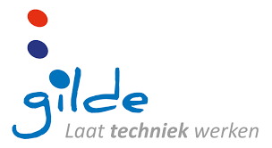
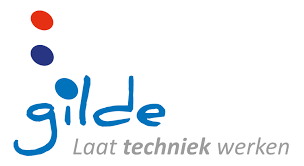

Home
Wie ben ik
Opleidingen
Bijbanen
Hobby's

Home
Wie ben ik
Opleidingen
Bijbanen
Hobby's
Ik heb al op 3 verschillende scholen gezeten.
Dat waren de Zevenster in Hardinxveld-Giessendam, het Gilde in Gorinchem, en het Davinci college ook in Gorinchem
Basisschool
Ik heb 8 jaar op de Zevenster gezeten waar ik alle basis vakken kreeg zoals rekenen, spelling, nederlands, en in de hogere klassen engels.
Middelbare
Daarna ben ik naar het Gilde gegaan en kreeg ik de eerste 2 jaar normale lessen bijvoorbeeld nederlands engels wiskunde.
Toen heb ik voor het derde jaar gekozen om electro-ICT te volgen. Dat heb ik toen de laatste 2 jaar gedaan ben heb ik daar ook examen in gedaan.
Daar heb ik geleerd hoe je lampmonturen moet aansluiten en met programeerbare relais gewerkt.
MBO
Daarna ben ik naar het Davinci college in Gorinchem gegaan, waar ik de eerste 2 jaar de opleiding medewerker beheer ICT heb gevolgd.
Daar heb ik geleerd hoe je computers en servers moet installeren en instellen. En nu volg ik de opleiding applicatie en mediaontwikkelaar.
Waarom heb ik voor mijn huidige opleiding gekozen?
Ik heb voor deze opleiding gekozen omdat ik al sinds ik op de middelbare school al programeur wilde worden.
Maar omdat ik daar eerst een MBO 3 diploma nodig had moest ik dus eerst de beheer opleiding volgen.